Inspired by the reality of the situation in Seattle explained through this article, this project explores the imminent megathrust earthquake in the Cascadia Subduction Zone.
This project was done in collaboration with 3 others.
Really Big One
Design Research
2017
2017
After much consideration of potential research topics and questions we decided to focus on the Cascadia Subduction Zone with the intent of exploring this research question:
"How might we preserve human life in Seattle in the aftermath of a megathrust earthquake?"
"How might we preserve human life in Seattle in the aftermath of a megathrust earthquake?"
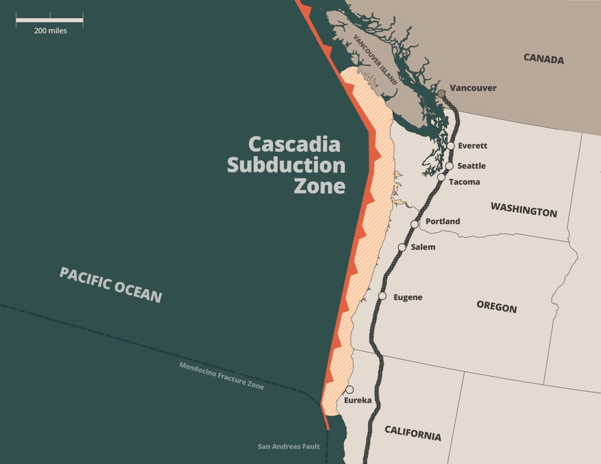
Source: Federal Emergency Management Agency
The goal was to find an area in this space that truly needed improvement, we didn't want to create an abstract problem and lead our research into an useless direction for the sake of technology.
A reserach plan was made once we figured out a real problem, what we were looking for and how we would find it.
We then interviewed a broad range of people so we could get a larger view into problems that needed to be solved and to get a better understanding of how and why the current systems are the way they are.
A reserach plan was made once we figured out a real problem, what we were looking for and how we would find it.
We then interviewed a broad range of people so we could get a larger view into problems that needed to be solved and to get a better understanding of how and why the current systems are the way they are.
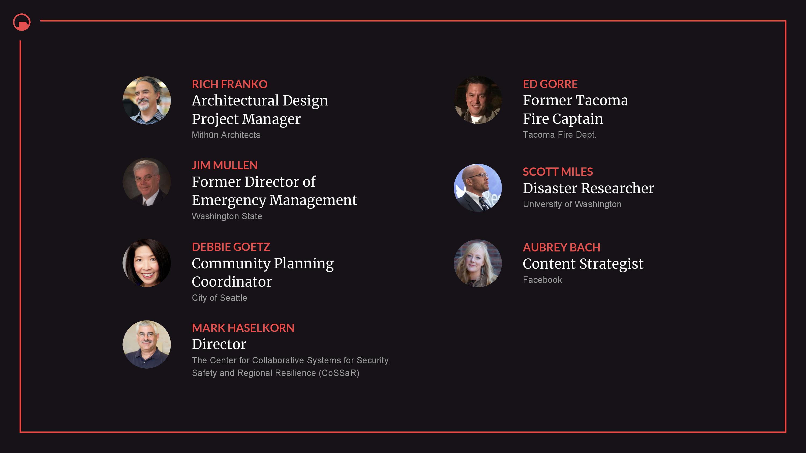
Apart from collecting data from structured interviews with certain specialists, we also conducted secondary research and compiled the most important points.
For synthesis, we transcribed the data into themes and then extracted particular insights from the themes. These insights were generated from multiple direct quotes from people working within the problem space.
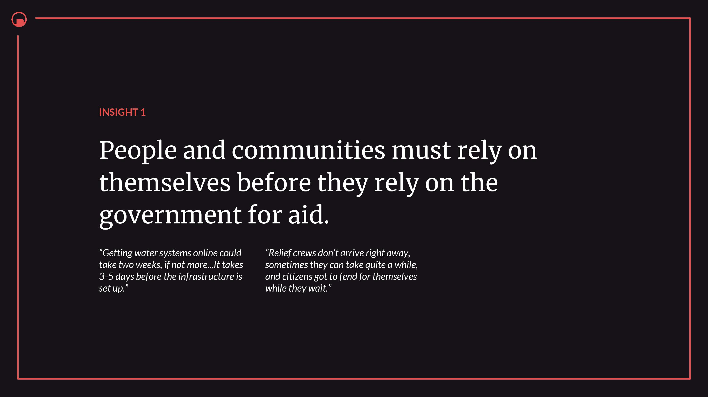
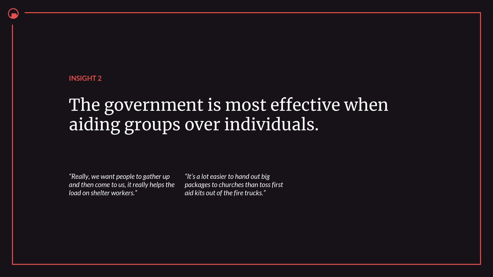
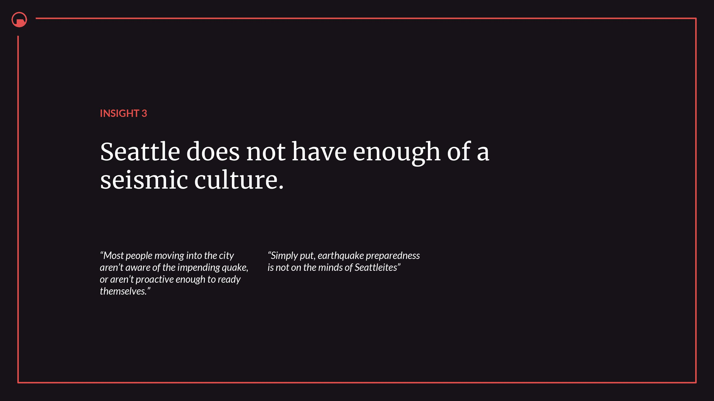
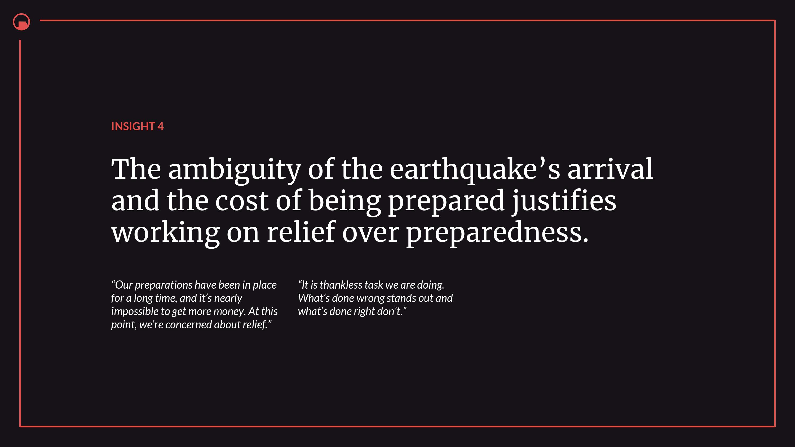
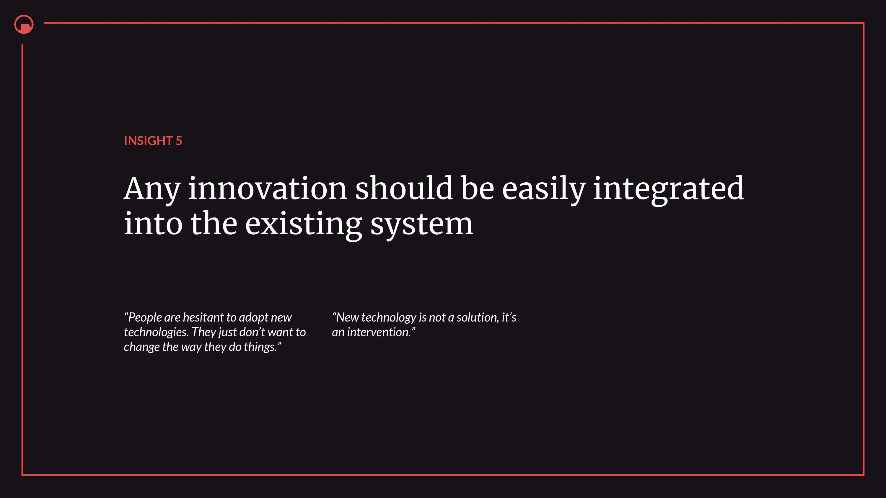
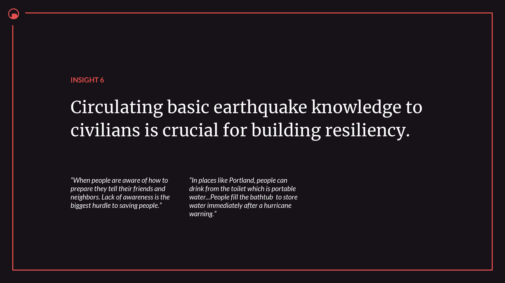
From the insights, we had to further define what was necessary from our findings. This process and the research pointed to the design principles which fundamentally revolved around helping civilians as opposed to government policymakers or first responders. Our design principles directed our further steps to bring about a solution to the problems we understood.
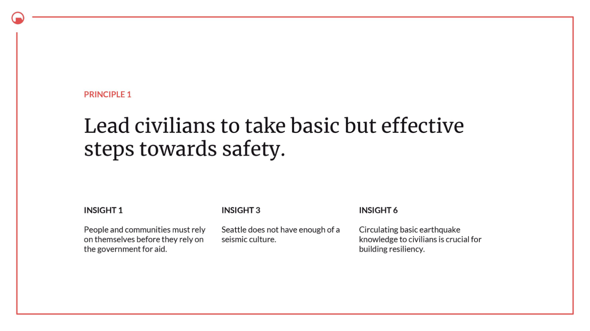
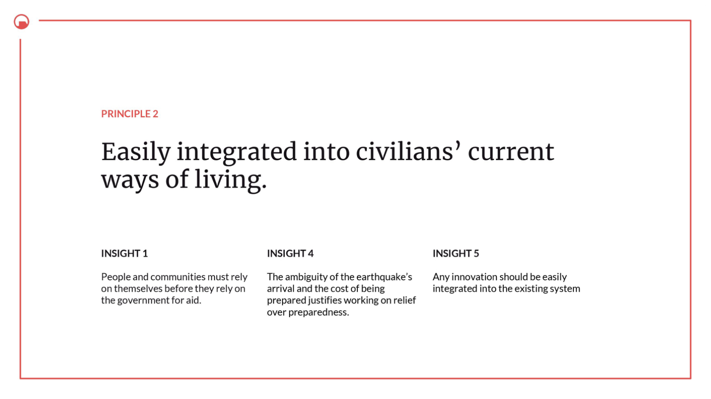
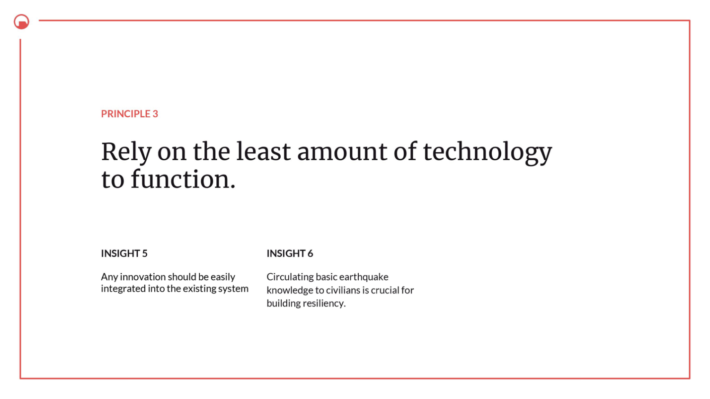
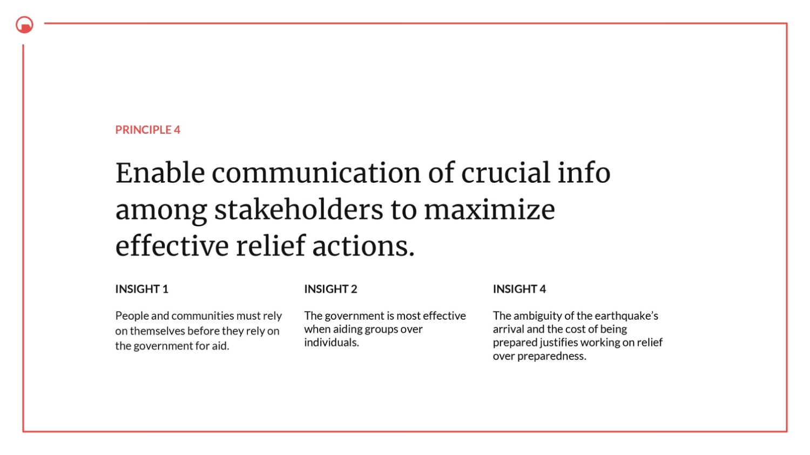
Our concepts revolved around our design principles and our given restriction to work in the field of biometrics.
On further developing one of the concepts, we tested out a prototype. It was a behavioral/wizard-of-oz prototype, and our focus was on people interacting with the prototype and their organic reactions to it.
On further developing one of the concepts, we tested out a prototype. It was a behavioral/wizard-of-oz prototype, and our focus was on people interacting with the prototype and their organic reactions to it.
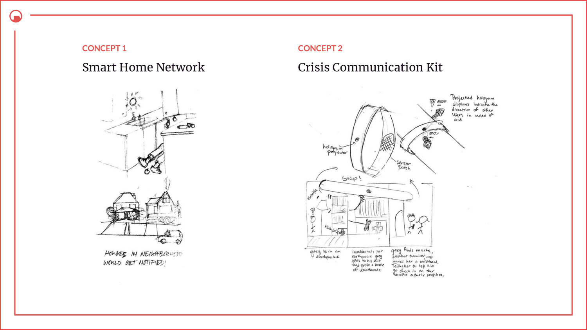
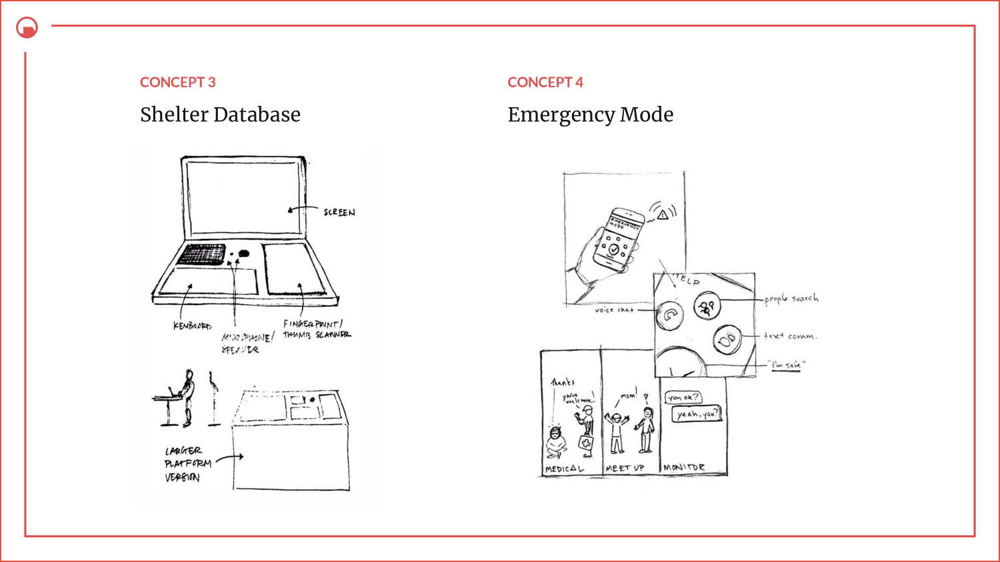
We then created an MVP to showcase what we conceptualized and created an 'advertisement' to tell the story of how the concept would be used in a disaster scenario.